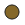

<!doctype html>
<html lang="en">
    <head>
        <meta charset="utf-8">
        <meta http-equiv="X-UA-Compatible" content="IE=edge">
        <!-- Mobile meta tags to go in head-->
        <meta name="HandheldFriendly" content="True">
        <meta name="viewport" content="width=device-width, initial-scale=1.0, maximum-scale=1.0, user-scalable=no" />
        <meta name="MobileOptimized" content="320"/>
        <meta name="apple-mobile-web-app-capable" content="yes">
        <meta http-equiv="cleartype" content="on">
        <meta name="mobile-web-app-capable" content="yes">
        <meta name="apple-mobile-web-app-capable" content="yes">
        <link rel="stylesheet" href="css/leaflet.css">
        <link rel="stylesheet" href="css/qgis2web.css"><link rel="stylesheet" href="css/fontawesome-all.min.css">
        <style>
        html, body, #map {
            width: 100%;
            height: 100%;
            padding: 0;
            margin: 0;
        }.leaflet-popup-content {
        min-width: 200px;
        min-height: 100px;
        overflow-y: scroll;
        }
        </style>
        <title></title>
    </head>
    <body>
        <div id="map">
        </div>
        <script src="js/qgis2web_expressions.js"></script>
        <script src="js/leaflet.js"></script>
        <script src="js/leaflet.rotatedMarker.js"></script>
        <script src="js/leaflet.pattern.js"></script>
        <script src="js/leaflet-hash.js"></script>
        <script src="js/Autolinker.min.js"></script>
        <script src="js/rbush.min.js"></script>
        <script src="js/labelgun.min.js"></script>
        <script src="js/labels.js"></script>
        <script src="data/Qatar_Wells_1.js"></script>
        <script>
        var highlightLayer;
        function highlightFeature(e) {
            highlightLayer = e.target;
            highlightLayer.openPopup();
        }
        var map = L.map('map', {
            zoomControl:true, maxZoom:9, minZoom:9
        }).fitBounds([[24.79379345702677,50.0606491959369],[26.089087107026774,52.74287294918738]]);
        var hash = new L.Hash(map);
        map.attributionControl.setPrefix('<a href="https://github.com/tomchadwin/qgis2web" target="_blank">qgis2web</a> &middot; <a href="https://leafletjs.com" title="A JS library for interactive maps">Leaflet</a> &middot; <a href="https://qgis.org">QGIS</a>');
        var autolinker = new Autolinker({truncate: {length: 30, location: 'smart'}});
        var bounds_group = new L.featureGroup([]);
        function setBounds() {
        }
        map.createPane('pane_pnvkarte_0');
        map.getPane('pane_pnvkarte_0').style.zIndex = 400;
        var layer_pnvkarte_0 = L.tileLayer('http://tileserver.memomaps.de/tilegen/{z}/{x}/{y}.png', {
            pane: 'pane_pnvkarte_0',
            opacity: 1.0,
            attribution: '<a href="http://www.xn--pnvkarte-m4a.de/">© Öpnvkarte, CC-BY-SA</a>',
            minZoom: 9,
            maxZoom: 9,
            minNativeZoom: 0,
            maxNativeZoom: 18
        });
        layer_pnvkarte_0;
        map.addLayer(layer_pnvkarte_0);
        function pop_Qatar_Wells_1(feature, layer) {
            layer.on({
                mouseout: function(e) {
                    if (typeof layer.closePopup == 'function') {
                        layer.closePopup();
                    } else {
                        layer.eachLayer(function(feature){
                            feature.closePopup()
                        });
                    }
                },
                mouseover: highlightFeature,
            });
            var popupContent = '<table>\
                    <tr>\
                        <td colspan="2"><strong>NAME</strong><br />' + (feature.properties['NAME'] !== null ? autolinker.link(feature.properties['NAME'].toLocaleString()) : '') + '</td>\
                    </tr>\
                    <tr>\
                        <td colspan="2"><strong>WELLS</strong><br />' + (feature.properties['WELLS'] !== null ? autolinker.link(feature.properties['WELLS'].toLocaleString()) : '') + '</td>\
                    </tr>\
                    <tr>\
                        <td colspan="2"><strong>WELLTYPE</strong><br />' + (feature.properties['WELLTYPE'] !== null ? autolinker.link(feature.properties['WELLTYPE'].toLocaleString()) : '') + '</td>\
                    </tr>\
                    <tr>\
                        <td colspan="2"><strong>DEPTH</strong><br />' + (feature.properties['DEPTH'] !== null ? autolinker.link(feature.properties['DEPTH'].toLocaleString()) : '') + '</td>\
                    </tr>\
                    <tr>\
                        <td colspan="2"><strong>WATERTYPE</strong><br />' + (feature.properties['WATERTYPE'] !== null ? autolinker.link(feature.properties['WATERTYPE'].toLocaleString()) : '') + '</td>\
                    </tr>\
                </table>';
            layer.bindPopup(popupContent, {maxHeight: 400});
        }

        function style_Qatar_Wells_1_0(feature) {
            switch(String(feature.properties['WATERTYPE'])) {
                case 'bad':
                    return {
                pane: 'pane_Qatar_Wells_1',
                radius: 10.0,
                opacity: 1,
                color: 'rgba(35,35,35,1.0)',
                dashArray: '',
                lineCap: 'butt',
                lineJoin: 'miter',
                weight: 1,
                fill: true,
                fillOpacity: 1,
                fillColor: 'rgba(133,104,41,1.0)',
                interactive: true,
            }
                    break;
                case 'brackish':
                    return {
                pane: 'pane_Qatar_Wells_1',
                radius: 10.0,
                opacity: 1,
                color: 'rgba(35,35,35,1.0)',
                dashArray: '',
                lineCap: 'butt',
                lineJoin: 'miter',
                weight: 1,
                fill: true,
                fillOpacity: 1,
                fillColor: 'rgba(253,191,111,1.0)',
                interactive: true,
            }
                    break;
                case 'bitter':
                    return {
                pane: 'pane_Qatar_Wells_1',
                radius: 10.0,
                opacity: 1,
                color: 'rgba(35,35,35,1.0)',
                dashArray: '',
                lineCap: 'butt',
                lineJoin: 'miter',
                weight: 1,
                fill: true,
                fillOpacity: 1,
                fillColor: 'rgba(255,250,77,1.0)',
                interactive: true,
            }
                    break;
                case 'fairly good':
                    return {
                pane: 'pane_Qatar_Wells_1',
                radius: 10.0,
                opacity: 1,
                color: 'rgba(35,35,35,1.0)',
                dashArray: '',
                lineCap: 'butt',
                lineJoin: 'miter',
                weight: 1,
                fill: true,
                fillOpacity: 1,
                fillColor: 'rgba(91,198,216,1.0)',
                interactive: true,
            }
                    break;
                case 'good':
                    return {
                pane: 'pane_Qatar_Wells_1',
                radius: 10.0,
                opacity: 1,
                color: 'rgba(35,35,35,1.0)',
                dashArray: '',
                lineCap: 'butt',
                lineJoin: 'miter',
                weight: 1,
                fill: true,
                fillOpacity: 1,
                fillColor: 'rgba(13,24,240,1.0)',
                interactive: true,
            }
                    break;
                case 'indifferent':
                    return {
                pane: 'pane_Qatar_Wells_1',
                radius: 10.0,
                opacity: 1,
                color: 'rgba(35,35,35,1.0)',
                dashArray: '',
                lineCap: 'butt',
                lineJoin: 'miter',
                weight: 1,
                fill: true,
                fillOpacity: 1,
                fillColor: 'rgba(189,37,37,1.0)',
                interactive: true,
            }
                    break;
                case 'unspecified':
                    return {
                pane: 'pane_Qatar_Wells_1',
                radius: 10.0,
                opacity: 1,
                color: 'rgba(35,35,35,1.0)',
                dashArray: '',
                lineCap: 'butt',
                lineJoin: 'miter',
                weight: 1,
                fill: true,
                fillOpacity: 1,
                fillColor: 'rgba(9,6,5,1.0)',
                interactive: true,
            }
                    break;
            }
        }
        map.createPane('pane_Qatar_Wells_1');
        map.getPane('pane_Qatar_Wells_1').style.zIndex = 401;
        map.getPane('pane_Qatar_Wells_1').style['mix-blend-mode'] = 'normal';
        var layer_Qatar_Wells_1 = new L.geoJson(json_Qatar_Wells_1, {
            attribution: '',
            interactive: true,
            dataVar: 'json_Qatar_Wells_1',
            layerName: 'layer_Qatar_Wells_1',
            pane: 'pane_Qatar_Wells_1',
            onEachFeature: pop_Qatar_Wells_1,
            pointToLayer: function (feature, latlng) {
                var context = {
                    feature: feature,
                    variables: {}
                };
                return L.circleMarker(latlng, style_Qatar_Wells_1_0(feature));
            },
        });
        bounds_group.addLayer(layer_Qatar_Wells_1);
        map.addLayer(layer_Qatar_Wells_1);
        var baseMaps = {};
        L.control.layers(baseMaps,{'Qatar_Wells<br /><table><tr><td style="text-align: center;"></td><td>bad</td></tr><tr><td style="text-align: center;"></td><td>brackish</td></tr><tr><td style="text-align: center;"></td><td>bitter</td></tr><tr><td style="text-align: center;"></td><td>fairly good</td></tr><tr><td style="text-align: center;"></td><td>good</td></tr><tr><td style="text-align: center;"></td><td>indifferent</td></tr><tr><td style="text-align: center;"></td><td>unspecified</td></tr></table>': layer_Qatar_Wells_1,"Öpnvkarte": layer_pnvkarte_0,},{collapsed:false}).addTo(map);
        setBounds();
        </script>
    </body>
</html>
